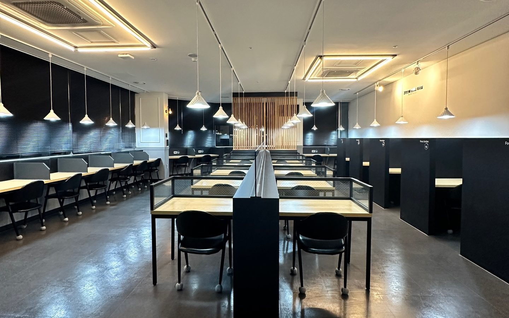

선배 멘토진
최상위권 대학 재학생이 우리 아이를 전담합니다.
성적, 성향, 입시 전략에 맞춰 가장 잘 맞는 멘토 한 명을 담임으로 배정합니다. 과목마다 선생님이 바뀌지 않고, 담임 멘토 한 명이 공부 계획부터 멘탈 관리까지 끝까지 맡습니다.
누적 1:1 멘토링
1,031회담임 멘토와 매주 만난 횟수를 모두 더했습니다.
담임 멘토링
주 1회한 주 공부 계획과 컨디션을 1:1로 점검합니다.
성적 상승
90%재원생 10명 중 9명은 성적이 올랐습니다.
아이의 담임을 맡을
선배들을 소개합니다.

2027 합격 멘토링 시스템
최상위권 대학 재학생이
합격까지 1:1로 지도합니다.
희망 대학 · 학과
입실 전 개별 상담에서 가고 싶은 학교와 학과부터 정합니다. 막연했던 목표가 학교 이름, 학과 이름이 됩니다.
솔직한 성적 분석
내신과 모의고사 성적이 어떻게 움직여 왔는지, 어느 과목이 발목을 잡는지 보고 목표까지 얼마나 남았는지 계산합니다.
담임 멘토 전담 관리
성적과 성향에 맞춰 배정된 담임 멘토가 목표까지 필요한 공부를 주 단위로 나누고, 매주 1:1로 점검합니다.
선배 아티클
선배들이 쓴
공부법과 입시 이야기.

담임 멘토 배정
우리 아이에게 맞는
선배를 찾아드립니다.
상담에서 성적과 성향, 목표 대학을 함께 살펴보고, 우리 아이와 가장 잘 맞는 담임 멘토를 배정해 드립니다.